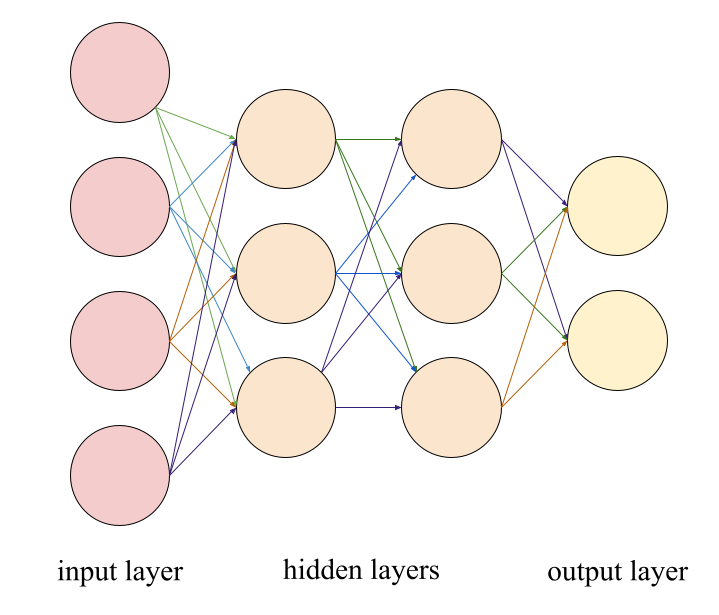

(there is much more information about neural networks elsewhere online if you are interested in reading further)
Neural networks are called as such since they are comparable to the human brain. Similar to the brain, each neural network is composed of neurons, though they are arranged in layers, with each layer altering the next in a way that eventually results in an outcome that can be interpreted from the data stored in the last layer of neurons. Each connection between two neurons in a neural network has a weight that determines the importance of the data in the previous neuron in determining the data in the next neuron.

simple diagram of a neural network
Each neuron also has a bias, which manipulates the weighted data and changes how it will be affected by the activation function (see below).
Each neuron's newly determined value passes through an activation function before being used for the next neuron. Nonlinear activation functions allow for more complex manipulation of data. Common activation functions include sigmoid (1⁄(1+e-x)) and tanh, though ReLU (max(0,x)) is most commonly used since it provides more accurate gradients (how much a given minor change in the neural network would affect the accuracy).
"Training" a neural network means determining the weights of each connection and the biases of each neuron. Neural networks essentially train themselves if given a sufficient amount of training data. The network’s output when each piece of data is inputted is compared to the information it was supposed to output. The weights and biases are changed in order to make it more likely that inputting a piece of information will result in the desired outcome.
To do this, the network determines the cost (inaccuracy) of the outcome of one or more inputs given a certain set of weights and biases. The program then determines what minor change to the weights and/or biases will result in the greatest cost decrease. This process is repeated until there are no more minor changes that can be made to further decrease cost. The weights and biases may end up at a local minimum (meaning that there is another possible combination that would result in an even lower cost, even though it would require a seemingly arbitrary major change), and while there are ways to mitigate the chance of this occurring, the issue is ultimately unable to be completely resolved.